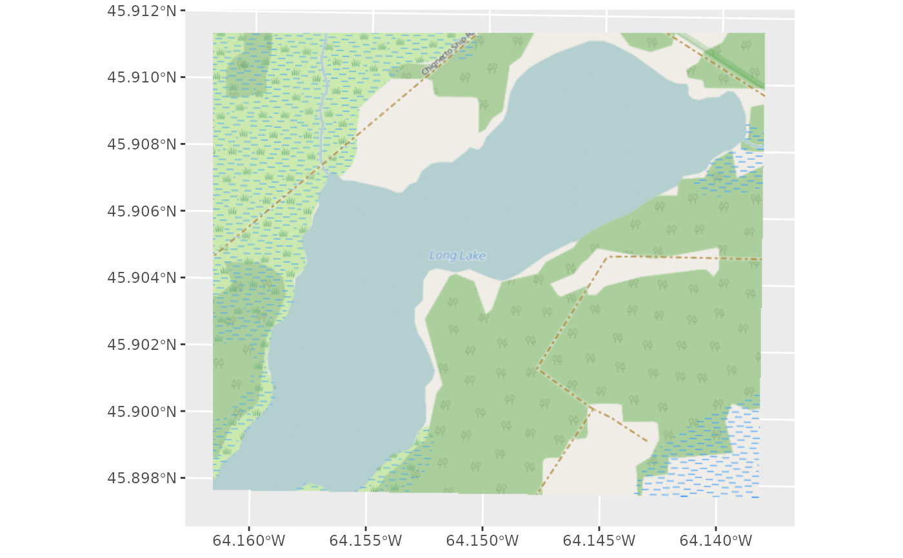

This is intended for use with RGB(A) rasters (e.g., georeferenced imagery or photos). To work with bands as if they were columns, use df_spatial and geom_raster.
# S3 method for Raster layer_spatial( data, mapping = NULL, interpolate = NULL, is_annotation = FALSE, lazy = FALSE, dpi = 150, ... ) # S3 method for Raster annotation_spatial(data, mapping = NULL, interpolate = NULL, ...) StatSpatialRaster StatSpatialRasterAnnotation StatSpatialRasterDf GeomSpatialRaster
| data | A Raster object |
|---|---|
| mapping | Currently, only RGB or RGBA rasters are supported. In the future, one may be able to map specific bands to the fill and alpha aesthetics. |
| interpolate | Interpolate resampling for rendered raster image |
| is_annotation | Lets raster exist without modifying scales |
| lazy | Delay projection and resample of raster until the plot is being rendered |
| dpi | if lazy = TRUE, the dpi to which the raster should be resampled |
| ... | Passed to other methods |
An object of class StatSpatialRaster (inherits from Stat, ggproto, gg) of length 3.
An object of class StatSpatialRaster (inherits from StatSpatialRaster, Stat, ggproto, gg) of length 3.
An object of class StatSpatialRasterDf (inherits from Stat, ggproto, gg) of length 5.
An object of class GeomSpatialRaster (inherits from Geom, ggproto, gg) of length 5.
A ggplot2 layer
#> Warning: Removed 6584 rows containing missing values (geom_raster).